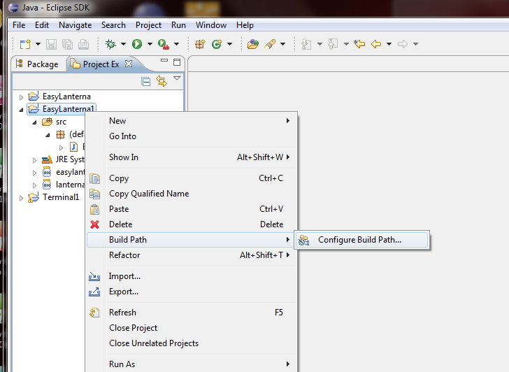
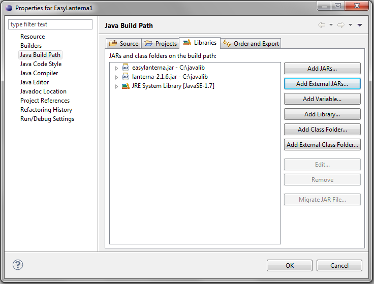
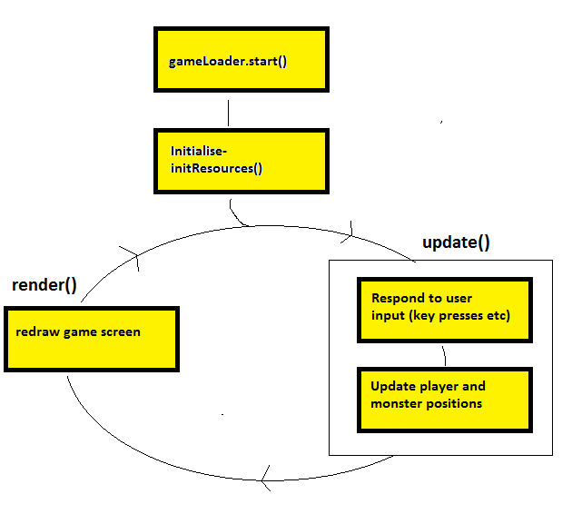

Topic 5: Simple Game Programming
There are no new object-oriented topics this week, but I am going to introduce you to a 2D games
environment which might help you understand the nature of classes and objects more clearly by allowing
you to do graphical object-oriented programming in a games context.
Note that you will not be assessed on this! I am introducing it to you to provide a "fun"
environment in which you can experiment with object-oriented programming.
Golden T Game Engine
The Golden T Game Engine (GTGE) is a Java library developed by Golden T Studios
which allows you to easily develop 2D games.
The source code is available
here.
Creating a Project
- When creating a project in Eclipse which uses GTGE, you need to let Eclipse know where the GTGE library can be found.
The library file is called a JAR file and can be built from the source
code available on GitHub, above.
- Each time you create a GTGE project, you need to add this library your project. To do this:
- Right-click on your project and then select "Build Path" and "Configure Build Path",
as shown below:

- In the dialog box which comes up, select "Add External JARs.."

- Navigate to where you saved the JAR files on your U: drive and add them. Once this is done, the
dialog box should appear as shown below (in your case it will be imported from
the U: drive, not C:\javalib):

- Click OK. Your project should now be setup!
Checking your settings
Type in the following Java code:
import com.golden.gamedev.*;
import java.awt.*;
import java.awt.image.BufferedImage;
import java.awt.event.KeyEvent;
public class MyGame extends Game
{
public void initResources()
{
}
public void update(long elapsedTime)
{
}
public void render(Graphics2D g)
{
}
public static void main (String args[])
{
System.out.println("Game development environment OK! ");
}
}
The basic structure of this should be familiar from your work with Java so far. You have a class making up the main program and it has a
main() method which is the entry point of the program. Compile and run the program, to check your settings are OK. You should get the message:
Game development environment OK!
Quick explanation of the code
When developing with GTGE you need to create a Game class with three methods, blank at the moment: initResources(), update() and render().
As you build up your game you will fill these in.
Your class needs to include "extends Game" as shown above. We will look at what this means later in the unit.
Windowing
You're now going to actually set up a graphical environment for the game. With GTGE, games can either be full-screen or windowed. For the purposes of the
tutorials, we are going to use windowed games, but a real game would probably be full-screen.
To set up a windowed environment, add the following code to your main() method in the MyGame class:
GameLoader gameLoader = new GameLoader();
MyGame myGame = new MyGame();
gameLoader.setup(myGame,new Dimension(640,480),false);
gameLoader.start();
This code:
- creates a GameLoader object (an object responsible for setting up the game);
- creates the game object itself (an object of the class MyGame);
- sets the game up in a window of dimensions 640x480 (the "false" means use windowed rather than full-screen);
- starts the game.
Compile and run again. You should now see a blank game window appear.
Architecture of a game
The basic architecture of any game involves a game loop:

The game is continuously looping round and round;
each time the game loop runs, the following tasks are performed:
- the game checks for user input (tests whether the user has pressed the keyboard, moved the mouse, joystick, etc). Obviously, because games need to be running
continuously, the program does not wait if no user input is received!
- the state of the game is updated (e.g. it reacts to user input, moves monsters towards the hero, moves bullets, etc). Variables representing the state of the game are
updated in this stage, but nothing is displayed
- the game's display is updated.
Note that, with GTGE, you do not write the loop yourself; it has been pre-written and is part of the GTGE library.
Instead, you fill in methods to perform each of these tasks. Then, the pre-written game loop calls each of your methods in turn.
So, if your methods are blank (as they are right now), nothing will happen !!!
The methods of the GTGE game class that you need to fill in are as follows: initResources(), update() and render(). The function of each is described below:
- The initResources() method is used to set up the game, e.g. initialise variables, load graphics from file, etc. Any setup code should go in here. This is only called
once.
- The update() method is used to update the state of the game. In this method, you should react to user input (key presses)
and update the state of the game, e.g: reacting to key presses and moving monsters towards the hero.
This is called once per iteration of the game loop
- In the render() method you actually draw the game screen; typically, this will have changed since the last time round the loop, due to the game characters moving.
Again, this is called once per iteration of the game loop.
Filling in the render() method
To illustrate the purpose of the render() method, you're now going to use Java graphics commands to actually draw something (a yellow circle) on the screen.
Fill in the render() method with the following code:
public void render(Graphics2D g)
{
g.setColor(Color.BLACK);
g.fillRect(0,0,getWidth(),getHeight());
g.setColor(Color.YELLOW);
g.fillOval(320,240,20,20);
}
Compile and run. You'll now see a yellow ball in the middle of the screen, and the screen will have a black background. The first two lines set the colour to black and
fill in the whole of the window; the second two lines set the colour to yellow and draw a ball at coordinates (320,240) of width 20 and height 20.
Reacting to keyboard input
Obviously a real game is going to need to react to keyboard input. To do this we use the keyDown() method, which is an in-built method of the Game class, to react to
a key being pressed down.
- Add two attributes x and y to your MyGame class (these represent the current position to draw the ball)
and initialise them to x=10 and y=10 (in which method?)
- Add the following to your program (which method? If you are unsure, read back....)
if(keyDown(KeyEvent.VK_LEFT))
{
// Move left
x--;
}
else if (keyDown(KeyEvent.VK_RIGHT))
{
// Move right
x++;
}
else if (keyDown(KeyEvent.VK_UP))
{
// Move up
y--;
}
else if (keyDown(KeyEvent.VK_DOWN))
{
// Move down
y++;
}
keyDown () takes a parameter representing the key to test; it tests whether a particular key is currently
pressed down. KeyEvent.VK_LEFT, etc, represent the cursor keys.
Change your code which draws the ball so that it is drawn at x and y rather than 320 and 240. Try the program.
Representing game characters as images
So far we’ve just drawn simple geometrical shapes. However, in a game we more commonly use graphics to represent the game characters. How do we do this in GTGE? We actually
use standard a standard Java feature, the BufferedImage class.
First add a BufferedImage as an attribute of your MyGame class:
private BufferedImage image;
Then load it in the initResources() method:
image = getImage("U:\\images\\hero.png");
and then draw it in render():
g.drawImage(image,x,y,null);
where x and y are the coordinates of the game character.
- Download an image for the Hero from
here (or, use your own image, as long as you know it's not a copyright image)
- Save it to a particular folder on your U: drive.
- Replace the fillOval with the drawImage() code above to draw an image instead of an oval.
Replace U:\\images\\hero.png with wherever you saved it. Make sure you use double-backslashes for the folder
separators.
Making it object-oriented
You have now seen how to create a simple graphical application using GTGE. What this unit is really
all about, though, is object-oriented development. So we are now going to
use GTGE to display your Hero class from Topics 3 and 4 on the screen.
- Give your Hero class the following additional attributes, if you have not done so already. Make sure they are all private!
- x, its x position on the screen;
- y, its y position on the screen;
- image, the image used to draw the Hero. This should be of data type BufferedImage.
-
Also give it the following methods.
- Modify your constructor, so that it initialises the hero's x and y coordinates and image, as well as the name and lives.
- left() should move the hero left, by reducing x by one.
- right() should move the hero right.
- up() should move the hero up, by reducing y by one.
- down() should move the hero down.
- A draw() method, to draw the hero at its current position. From the example above, you can see that the
drawImage() method of Graphics2D is used to draw the image on the screen.
Therefore, this method will need to take a parameter of data type Graphics2D, so that we have a Graphics2D
object to draw with.
- Modify your MyGame class to move around and display a Hero object in response to the cursor keys.
You will need to add the Hero object as an attribute of your MyGame class so that it can be accessed in all the methods.
Advanced
Try writing a chase game in which a Monster (see advanced question, topic 4) chases the Hero. The game should end when the monster has eaten the hero.
You'll need to give your Monster class a BufferedImage attribute and a draw() method, as for the Hero. If you need a monster image
there is one here.
{kind=link}
{kind=link}